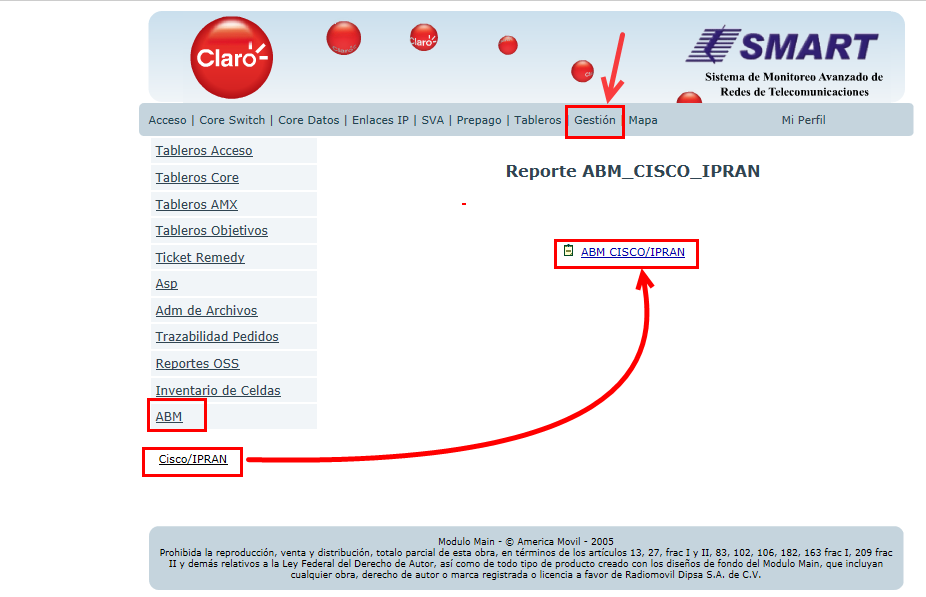
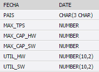
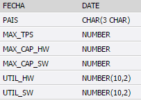
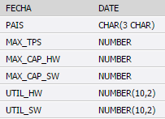
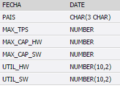

TABLERO NQI¶
TABLERO QDA/QDR/Configuración (NQI HOURLY)¶
1.OBJETIVO¶
El presente documento buscar explicar y detallar el proceso que genera el Tablero NQI HOURLY
2.ALCANCE¶
Áreas involucradas: Performance de Red
3.DESCRIPCION GENERAL:¶
El tablero NQI se puede consultar por nivel de sumarizacion y por elemento de red. Los niveles de sumarizacion son: Horarios, Diarios y Semanales. Los elementos de red disponibles son: Celda, Sitio, Elemento Controlador, Alm, Mercado, Pais.
Estos valores son iniciales.
La informacion que muestra el tablero de NQI es del lado de ACCESO y esto incluye tanto la parte de voz como la de datos. El tablero NQI esta compuesta de algunas secciones: Trafico de Voz, Trafico de Datos (Tanto UpLink, DownLink como tambien discriminado por HSPA y por R99), Fallas en el establecimiento de las fallas (RAB y RRC), Indicador de Traffic Load y su apertura, Twmap y otros parametros de configuracion solo disponibles a nivel de celda (la gran mayoria).
Hoy por hoy, solamente se encuentra disponible el nivel de sumarizacion hour y a nivel del celda.
El nombre de la tabla con la info del tablero es TABLERO_NQI_HOUR.
Para ver el tablero, una vez conectados a la base de datos DSmart2, con el PL/SQL se debe ejecutar lo siguiente:
- SELECT * FROM tablero_nqi_hour
Contiene los siguientes campos:
 



- Server:
falda.claro.amx (10.92.56.198).
- Base de Datos:
Oracle 12C. Instancia DSmart2
- Frecuencia del proceso:
Por Hora.
- Proceso que genera el tablero:
El tablero se procesa mediante un JOB en la BD, no contiene codigo script shell, ni tampoco Java, ni Pentaho. La insercion, mantenimiento y reprocesos de datos se hace pura y exclusivamente desde la BD. El JOB se llama TABLERONQIHOURAUX, corre todas las horas.
En la parte declarativa tenemos dos cursores y algunas variables. El cursor FECHAS divide en ciclos predefinidos la ventana de procesamiento, cualquier sea su tamaño. Ejemplo: Si quiero procesar una ventana de 12 horas y el ciclo esta definido en 4 horas. El cursor devolvera tres periodos de tiempo de 4 horas cada uno que en total representarian la ventana de tiempo definida por el usuario para reprocesar. Y el segundo cursor, llamado ELEMENTOS, detalla cada uno de los regionales que se tienen en cuanta para recolectar los valores e insertarlos en el tablero final.
Ambos cursores define la ventana de procesamiento... por cada regional se procesa un periodo de tiempo a la vez.
Cada ventana de procesamiento ejecuta dos procedimientos: P_AUX_TABLERO_NQI_HOUR_INS y P_TABLERO_NQI_HOUR_INS. Todos los procedimientos y funciones invocadas durante todo el tratamiento del tablero NQI, se encuentra dentro del package G_TABLERONQIHOUR.
- Duración del proceso:
20 miutos aproximadamente
4. MACRO FLUJO DEL PROCESO¶

5. DESCRIPCIÓN DETALLADA¶
ESQUEMA DEL PROCEDIMIENTO PARA GENERAR EL TABLERO NQI Hour

- El JOB TABLERONQIHOURAUX tiene el siguiente bloque PL/SQL:
- El Package G_TABLERONQIHOUR tiene el siguiente bloque PL/SQL:
- El Procediminto P_AUX_TABLERO_NQI_HOUR_INS tiene el siguiente bloque PL/SQL:
- El Procedimiento P_TABLERO_NQI_HOUR_INS tiene el siguiente bloque PL/SQL:
- El Procedimiento P_UMTS_CLDD_NQI_1ST_AUX_INS tiene el siguiente bloque PL/SQL:
- El Procedimiento P_UMTS_CLDD_NQI_2ST_AUX_INS tiene el siguiente bloque PL/SQL:
- El Procedimiento P_UMTS_CLDD_NQI_3ST_AUX_INS tiene el siguiente bloque PL/SQL:
- El Procedimiento P_RADAR_C_TLOAD_NQI_HOUR_INS tiene el siguiente bloque PL/SQL:
- El Procedimiento P_RADAR_TLOAD_NQI_HOUR_INS tiene el siguiente bloque PL/SQL:
- El Procedimiento P_UMTS_CLDD_NQI_TWP_AUX_INS tiene el siguiente bloque PL/SQL:
6. REPROCESO¶
El reproceso se realiza ejecutando el siguiente bloque PL/SQL:
Ingresando los siguientes campos:
- Numero de RC : OSSRC<1|2|3|5>
- Formato de la fecha desde : DD.MM.YYYY HH24
- Formato de la fecha hasta : DD.MM.YYYY HH24

7. CONTROL DE CAMBIOS¶
| Fecha | Responsable | Ticket Jira | Detalle | Repositorio |
|---|